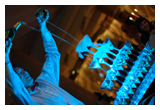
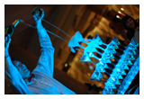

Компания «Живи Ярко» была основана в 1999 году в Санкт-Петербурге. Перва фото-аудиоя студия была открыта по адресу улица Некрасова, д.1. На тот момент рынок фото-видео индустрии находился в зачаточном состоянии. Качественные фотоснимки имели возможность делать только профессиональные фотографы, имевшие спеуиальныую фототехнику.
Наши услуги:
- Студийная фотосъемка
- Студийная видеосъемка
- Обработка аудиофайлов
 
